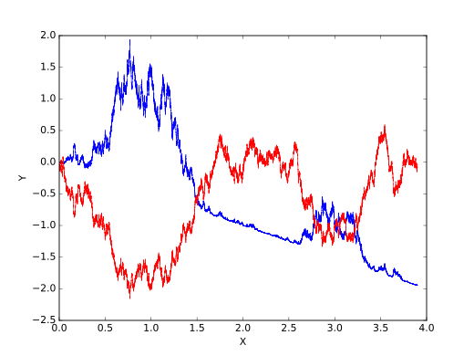

Itô calculus, named by Kiyosi Itô, is an extension of calculus to stochastic processes such as Brownian motion, with applications in mathematical finance and stochastic differential equations.
The central concept is the Itô stochastic integral, a stochastic generalization of the Riemann–Stieltjes integral. In this integral, both integrands and integrators are stochastic processes. \[ Y_t = \int_0^t H_s \, dX_s \] where \(H\) is a locally square-integrable process adapted to the filtration generated by \(X\), which is a Brownian motion. The integral results in another stochastic process, and its evaluation involves considering a limit of a sequence of random variables.
Itô integral Yt(B) (blue) of a Brownian motion B (red) with respect to itself, i.e., both the integrand and the integrator are Brownian. It turns out Yt(B) = (B2 − t)/2.
Integration by parts holds significance in stochastic calculus. The formula for the Itô integral deviates due to the introduction of a quadratic covariation term: \[ X_t Y_t = X_0 Y_0 + \int_0^t X_s \, dY_s + \int_0^t Y_s \, dX_s + [X, Y]_t \] where \([X, Y]\) represents the quadratic covariation process.
Itô's lemma is a specialized version of the change of variables formula for the Itô integral. If \(f\) is twice continuously differentiable, then \[ df(X_t) = \sum_{i=1}^n f_i(X_t) \, dX_{i,t} + \frac{1}{2} \sum_{i,j=1}^n f_{i,j}(X_t) \, d[X_i, X_j]_t \] where \([X_i, X_j]\) represents the quadratic covariation.
In mathematical finance, the Itô stochastic integral is conceptualized as the payoff of a continuous-time trading strategy, with the condition of adaptation ensuring the strategy uses only available information. The process \(Y_t = \int_0^t H \, dX\) is a stochastic process, representing the total value of a trading strategy involving the amount \(H_t\) of stock at time \(t\).